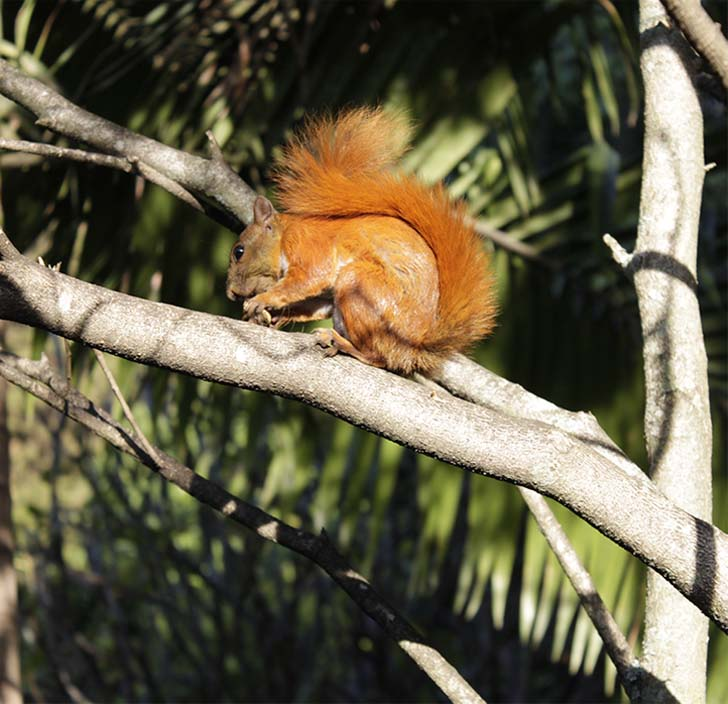

<html>
<head>
<meta charset="utf-8">
	<link rel="stylesheet" type="text/css" href="../estilos/estilosinternas.css">
	<link rel="shortcut icon" href="../favicon.jpg" />
	<link rel="stylesheet" type="text/css" href="../fonts/style.css">

	<title>Actividades</title>
</head>
<body>
	<div id="caja_superior">


<a href= "https://www.facebook.com" id="facebok"><span class="icon-facebook"></span></a>
<a href="https://www.twitter.com" id="twiter"><span class="icon-twitter-with-circle"></span></a>
<a href="https://www.plus.google.com" id="google"><span class="icon-google-with-circle"></span></a>
<a href="https://www.youtube.com" id="youtube"><span class="icon-youtube"></span></a>
</div>

</body>
</html>

<header>


</header>

<nav>

	<ul>
	<li><a href="../index.html" target="_new" id="home">Home <span class="icon-home"></span></a></li>
	<li><a href="../index.html" target="_new" id="home2"> <span class="icon-home"></span></a></li>

	<li><a href="../paginas/history.html" target="_new" id="historia">Historia<span class="icon-hour-glass"></span></a></li>
	<li><a href="../paginas/history.html" target="_new" id="historia2"><span class="icon-hour-glass"></span></a></li>

	<li><a href="../paginas/jardin.html" target="_new" id="jardines">Jardines<span class="icon-leaf"></span></a></li>
	<li><a href="../paginas/jardin.html" target="_new" id="jardines2"><span class="icon-leaf"></span></a></li>

	<li><a href="../paginas/tarantel.html" target="_new" id="tarantela">Tarantela<span class="icon-shop"></span></a></li>
	<li><a href="../paginas/tarantel.html" target="_new" id="tarantela2"><span class="icon-shop"></span></a></li>

	<li><a href="../paginas/actividad.html" target="_new" id="actividades">Actividades<span class="icon-hand"></span></a></li>
	<li><a href="../paginas/actividad.html" target="_new" id="actividades2"><span class="icon-hand"></span></a></li>

	<li><a href="../paginas/edito.html" target="_new" id="editorial">Editorial<span class="icon-pencil"></span></a></li>
	<li><a href="../paginas/edito.html" target="_new" id="editorial2"><span class="icon-pencil"></span></a></li>
	</ul>

	<input type="search" name="busqueda" id="busca">

	</nav>


	 </img>
	<h1 id="titulo1"> ACTIVIDADES </h1>
	<p id="titulo2"> Mucho más que un Museo</p>

	<section id="bannerudem"></section>
	<p id="parrafocel">
	MUSEO EL CASTILLO <br> <br>
	Más que un museo, un lugar histórico, la memoria colectiva hecha castillo, un legado de aquellos que hicieron ciudad con sus ideas, un gigante de la arquitectura, un referente de unión entre las familias antioqueñas y las que sin serlo parecían haber nacido bajo las mismas montañas, una conjución entre lo moderno y lo antiguo, entre lo nuevo y lo viejo, entre un hogar convertido museo y un museo que acoge como propios a quienes lo visitan.</p>

	<p id="parrafoprincipal"> Considerado como un escenario mágico lleno de lugares que hacen para quienes lo visitan una experiencia emotiva, sensitiva, educativa y cultural. El Museo El Castillo, tiene a la mano una lista enorme de actividades que se extienden desde una breve visita a la galería hasta la posibilidad de realizar el evento más personal de cualquier soñador, la cita más romántica, un día de sol en familia, el trabajo fotográfico mas exigente o cualquier personaje intrigado por conocer la historia allí escondida.</p>
	
	

	<div id="borde"></div>

	

	<div id="borde2"></div>

		 </img>


	<p id="parrafo_secundario"> 
	Esta estructura con más de 80 años lleva copando los cielos de la capital de la montaña y al mismo tiempo, llenando las expectativas de ciudadanos cada vez más exigentes en lo que respecta a realizar actividades y el disfrute de nuevos espacios o aquellos que aún siendo viejos, se han ido recuperando poco a poco. <br></br>

	Acondicionado como museo, pero yendo más allá de lo que su nombre dicta, El Museo El Castillo además de sus tradicionales exhibiciones artísticas y el goce que sus jardines ofrecen, también brinda la posibilidad de realizar recepciones sociales, matrimonios, eventos empresariales, programas de capacitación, seminarios y convenciones, y su hermoso paisaje sirve como locación publicitaria y promocional para muchos locos sueltos, locos que también toman los talleres de arte, música y danza. La realización de picnics, servicio que también se ofrece, ha sido más que un éxito y más aún cuando se cuenta con semejante espacio para disfrutar de una manta, las mejores opciones culinarias y los seres queridos. <br></br>

	La Tarantela ubicada en La Casita de muñecas de Isolda es una excelente elección a la hora de disfrutar delicias de la cocina permeadas por el olor de la naturaleza, el mismo olor que también se mete en lo más profundo de las magníficas piezas exhibidas en el ensoñado Anticuario, el tesoro del Museo El Castillo. </p>


	<div id="cajaroja1">
	<section id="banneraizon"></section>


<nav id="navinf">
	<ul>
	<li><a href="../index.html" target="_new" id="home">Home <span class="icon-home"></span></a></li>
	<li><a href="../paginas/history.html" target="_new" id="historia">Historia<span class="icon-hour-glass"></span></a></li>
	<li><a href="../paginas/jardin.html" target="_new" id="jardines">Jardines<span class="icon-leaf"></span></a></li>	
	<li><a href="../paginas/tarantel.html" target="_new" id="tarantela">Tarantela<span class="icon-shop"></span></a></li>
	<li><a href="../paginas/actividad.html" target="_new" id="actividades">Actividades<span class="icon-hand"></span></a></li>
	<li><a href="../paginas/edito.html" target="_new" id="editorial">Editorial<span class="icon-pencil"></span></a></li>
	</ul>
</div>

<section id="banneraizon2"></section>

<input type="search" name="busqueda" id="busca2">
<a href= "https://www.facebook.com" id="facebok2"><span class="icon-facebook"></span></a>
	<a href="https://www.twitter.com" id="twiter2"><span class="icon-twitter-with-circle"></span></a>
	<a href="https://www.plus.google.com" id="google2"><span class="icon-google-with-circle"></span></a>
	<a href="https://www.youtube.com" id="youtube2"><span class="icon-youtube"></span></a>


<div id="cajacafe"><footer> COPYRIGHT 2017 AIZOON SA. & CIA. </br>
TÉRMINOS Y CONDICIONES POLÍTICA DE PRIVACIDAD Y USO DE INFORMACIÓN PERSONAL SUPERINTENDENCIA DE INDUSTRIA Y COMERCIO</br>
NIT 890901353-2 DIRECCIÓN CARRERA 43 A N° 68 A SUR 30, SABANETA - ANTIOQUIA, COLOMBIA</br>
CONMUTADOR (57) (4) 5062470 BOGOTÁ (57) (1) 4156767 FAX (57) (1) 4157507 LÍNEA DE ATENCIÓN AL CLIENTE (57) (4) 2186547</footer></div>
<div id="cajaroja2"></div>
